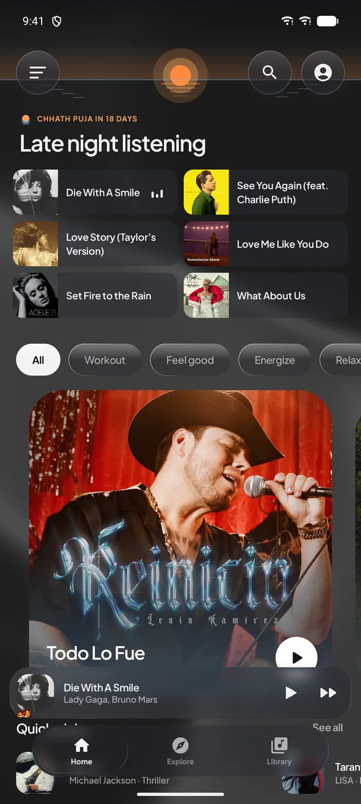
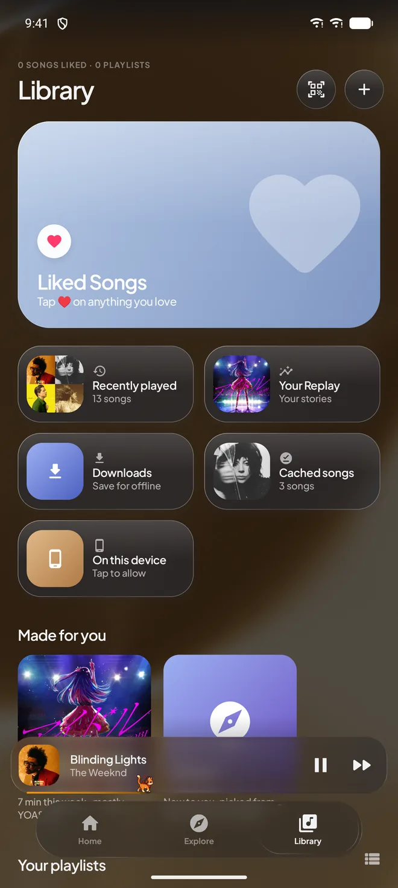
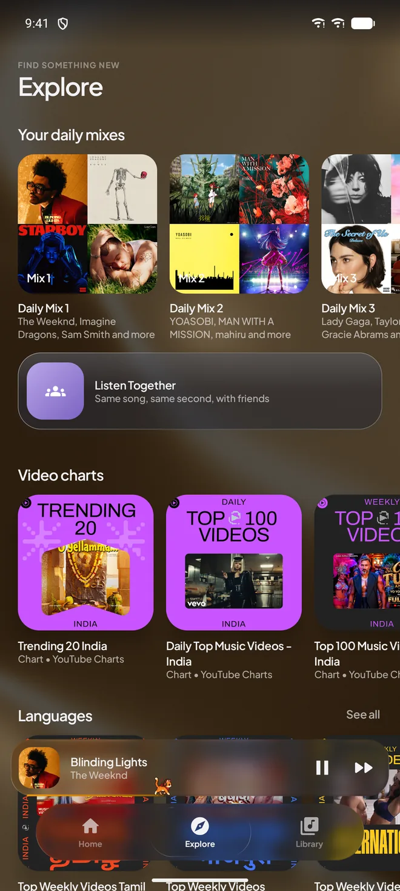
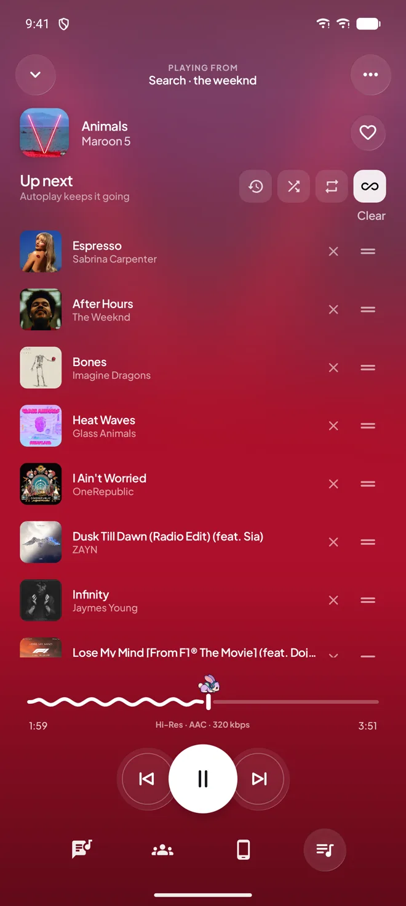
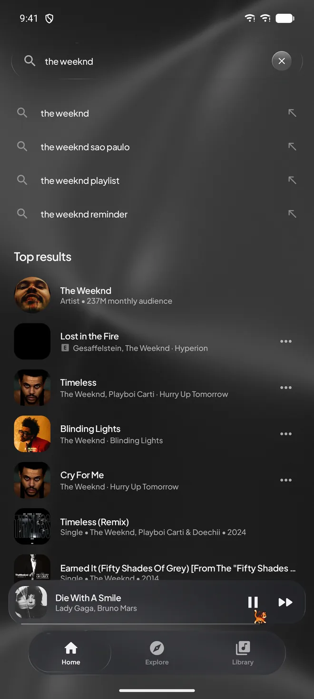
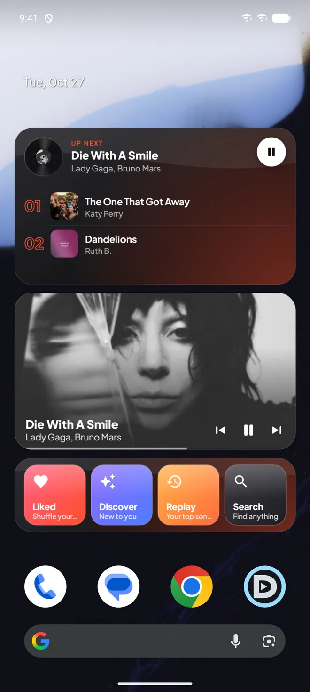

- 01HomeMixes made on your phone from what you play.

- 02Now playingColours from the cover. The art breathes with the beat.
- 03LibraryMade for you, and downloads that work in airplane mode.

- 04ExploreDaily mixes, charts, and Listen Together with friends.

- 05QueueSwipe a song to queue it. Automix crossfades the rest.

- 06SearchResults while you type, across every catalogue.

- 07Home screenWidgets tinted by the cover, lyrics on the lock screen.

BopDop, a free music player for Android. Press play, it comes alive.
Free music player for Android
YouTube Music and JioSaavn in one player, with synced lyrics, offline downloads and mixes made from what you play.
YouTube Music/JioSaavn/Spotify playlists/Last.fm/ListenBrainz/Google Cast/
//////
01Lyrics
every word,
right on the beat.
Lyrics light up word by word as they're sung. Leave them for a second and the player steps aside, so it's just you and the words.
- Translation
- Under each line, with romaji for Japanese and other scripts.
- Timing
- Off by a beat? Nudge it and BopDop remembers, per song.
- Lock screen
- The current line follows you onto the lock screen.
02Seek bar pets
seven little friends
walk your songs.
One walks along the seek bar while a song plays. Pause, and it curls up for a nap. Pick yours.
01 / 07
02.1Draw the song
03Screens
out of all of it,
these i'd show you first.
04Spec sheet
the rest of the list.
320kbps AAC
24bit FLAC
7pets
0ads
- Sound
- AAC 320 kbps from JioSaavn when it has the song. FLAC 24/96 with add-ons. Bit-perfect USB DACs. Equalizer and spatial audio.
- Playback
- Speed 0.5x to 2x. Sleep timer that fades out. Automix crossfades. Cast to speakers and TVs.
- Taste
- Not for me, to skip and teach. Replay stats. Spotify playlists and Canvas. Last.fm and ListenBrainz scrobbling.
- Together
- Listen Together rooms, where friends hear the same song at the same second.
- Look
- Light and dark, app icons, festival themes, beat-reactive ambient light.
- Yours
- Backup and restore to a file. Search inside Settings. Stats for nerds.
free. no ads.
no account.
On a computer?Scan this with your phone to open the download there.
Older phone or not sure? Get the version that works everywhere.
- 01DownloadThe APK, straight from GitHub.
- 02Allow installsAndroid asks once to let your browser install apps.
- 03Stay currentBopDop spots new versions and updates itself.
05Questions
Is BopDop free?
Yes. No ads, no subscription, no account needed.
Why isn't it on the Play Store?
BopDop is released on GitHub, where every version and its source are public. You install the APK yourself, and the app keeps itself up to date from there.
Do I need to sign in?
No. Everything works signed out. Signing in to YouTube Music or Spotify only adds your own playlists and mixes.
Which file should I download?
The Download button gives you the build for most phones from recent years (arm64). If it won't install, take the version that works everywhere; it's just a bigger download.
Where does my data go?
Your library, history and settings stay on your phone, and you can back them up to a file. Sign-ins and scrobbles only go to the services you choose.
Is it an official YouTube or Spotify app?
No. BopDop is an independent project and isn't affiliated with YouTube, Google, JioSaavn or Spotify.